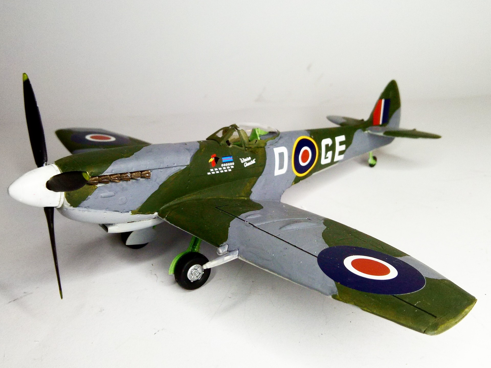
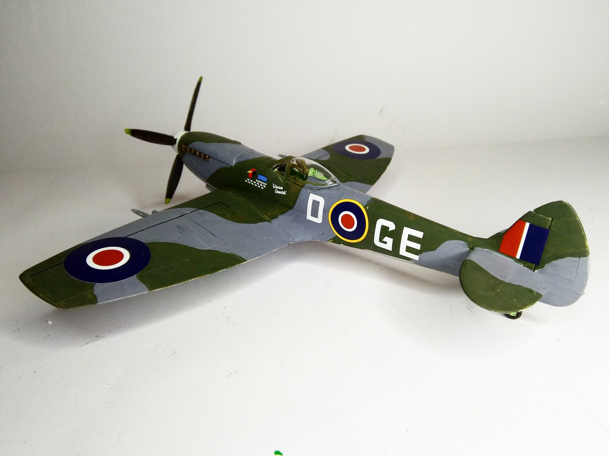

Aerei · scale model archive
Supermarine Spitfire Mk,XIV
Supermarine Spitfire Mk,XIV — Kit: Italeri, Scale: 1/48. 349th Squadron late 1945 Fassberg AB #1/48 #Italeri #Spitfire #MkXIV

Photo gallery

English description
349th Squadron late 1945 Fassberg AB
#1/48 #Italeri #Spitfire #MkXIV
Descrizione italiana
349th Squadron, fine 1945, base aerea di Fassberg.